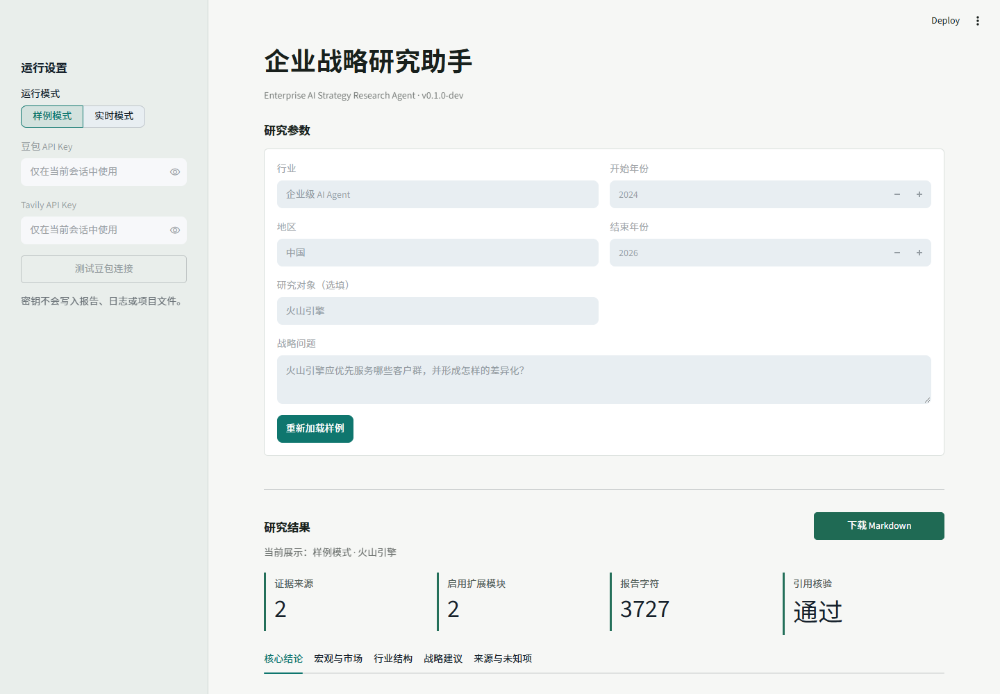

Evidence-first strategy research, from public data to structured recommendations.
A Streamlit-based AI workflow for market, customer, competitive, PEST, and Five Forces analysis with citation-backed report generation.
The interactive Streamlit demo may take 1-2 minutes to wake up after inactivity. This page remains available as a stable project overview.
Repository URL: https://github.com/enachepaolae172-web/xiaowbai

109Automated tests across models, workflow, reporting, search, and app behavior
15Maximum source records per run with evidence IDs and citation audit
v0.1.0Public release with sample and live research modes
What it does
- Turns a strategy question into a structured research plan.
- Collects and tiers public sources before model reasoning.
- Separates facts, judgments, counterpoints, unknowns, and recommendations.
- Produces a Markdown report with auditable source references.
Strategy modules
- PEST, market judgment, customer segmentation, and procurement drivers.
- Porter's Five Forces and industry structure assessment.
- Conditional modules for concentration, value chain, lifecycle, innovation, price, and share.
- 90-day validation plan with owners, milestones, and success metrics.
Technical stack
PythonStreamlitPydanticDoubao / Ark APITavily SearchEvidence-gated workflowMarkdown reportingPytest